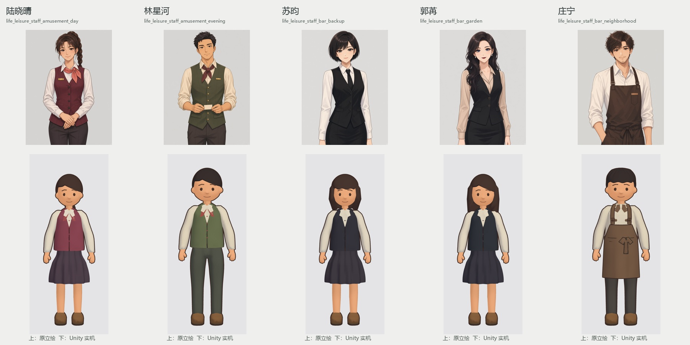
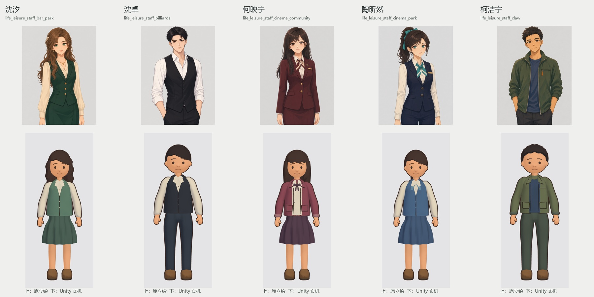
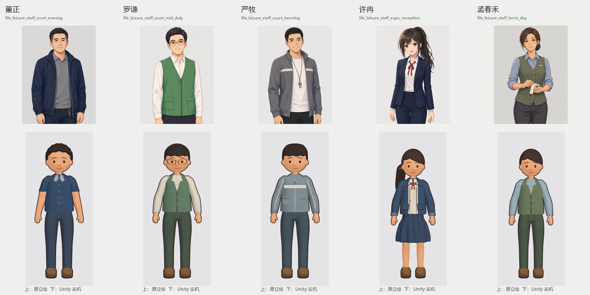
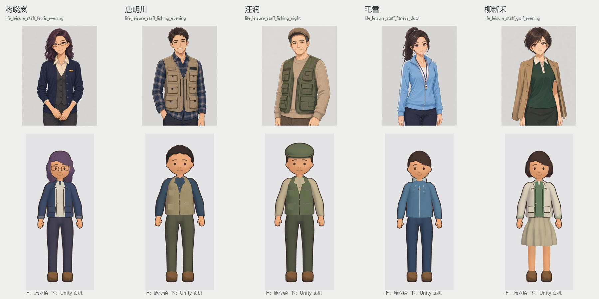
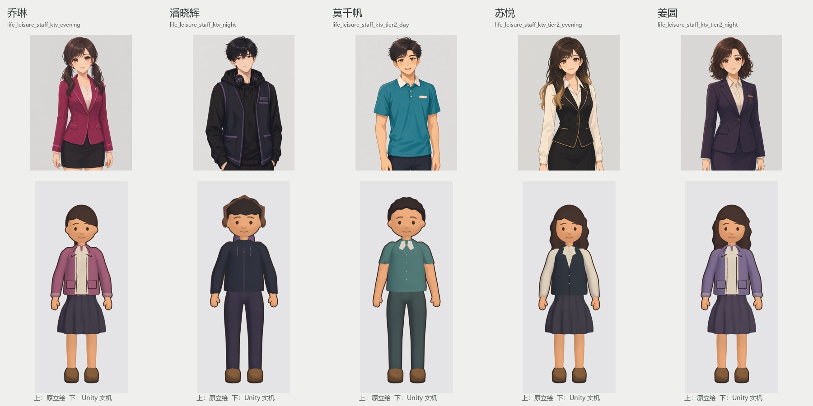
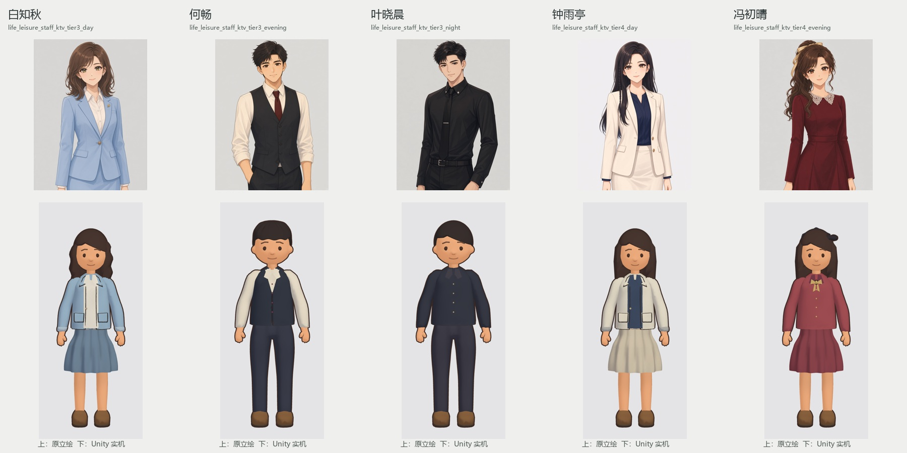
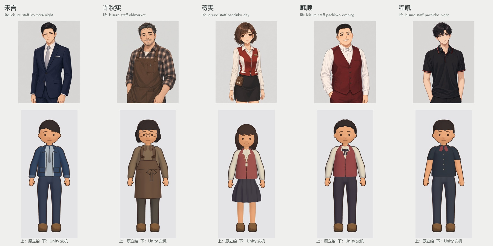
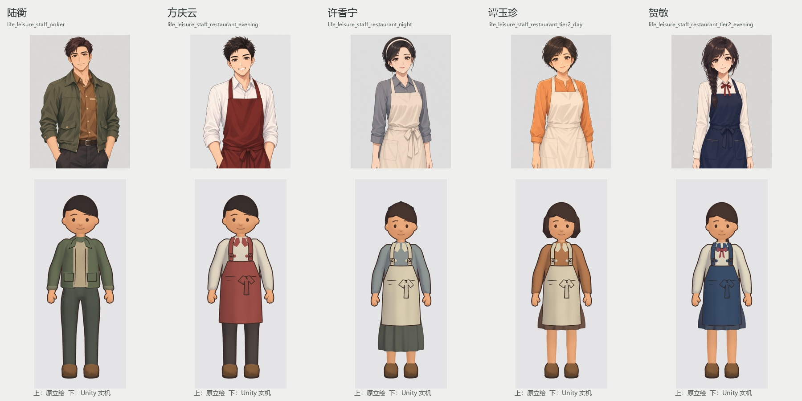

02-医院与场所员工
正式人物入口生成的真实 Unity 三维模型。上方原立绘只核对身份、发型和服装；身体比例沿用已确认的三人母版。点击小图查看原始截图。未补画渲染帧。
第 1 组：陆晓晴、林星河、苏昀、郭苒、庄宁

第 2 组：沈汐、沈卓、何映宁、陶昕然、柯洁宁

第 3 组：董正、罗谦、严牧、许冉、孟春禾

第 4 组：蒋晓岚、唐明川、汪润、毛雪、柳新禾

第 5 组：乔琳、潘晓辉、莫千帆、苏悦、姜圆

第 6 组：白知秋、何畅、叶晓晨、钟雨亭、冯初晴

第 7 组：宋言、许秋实、蒋雯、韩顺、程凯

第 8 组：陆衡、方庆云、许香宁、谭玉珍、贺敏

第 10 组：陈嘉树、沈若怡、徐景和、罗静怡、周明川